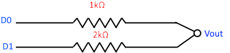
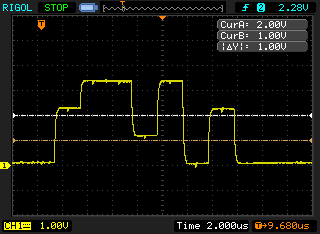
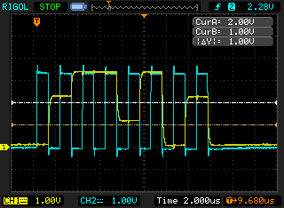

Capturing multiple channels of digital data on a two channel digital oscilloscope
In my previous post I showed how I parsed the CSV data to do some basic logic analysis. The problem is that I have a two channel scope and need to capture three channels for SPI (i.e. clock + MOSI + MISO).
As it turns out this can be done without too much fuss by using a digital to analogue (DAC) “resistor ladder”. The two options I looked at were the R-2R ladder and the simpler binary weighted ladder. For two levels the binary weighted DAC is the simplest, it just needs two resistors (one double the other one’s resistance).
Here is the circuit diagram

So one input goes through the 1k resistor and the other through a 2k resistor and you measure the output. With an DAC with only two levels there is tolerance for some noise on the digital lines. I’m working at ~3 volts, so the levels I’m going to see are
| Voltage | D0 | D1 |
|---|---|---|
| 0v | 0 | 0 |
| 1V | 0 | 1 |
| 2V | 1 | 0 |
| 3V | 1 | 1 |
You can clearly see the three levels on the scope when measuring Vout

I kept the clock separate on channel 2 so that I could trigger on it. Here is the clock + data

With only two channels going through the DAC you could reconstruct the two digital data channels by eye. That is not much fun though. So I modified my F# script from the previous post to split the data into two values and then do the logical analysis and print out two channels of data. This proved very useful when using a SPI device that returns data (e.g. SD card). Here is the full F# script [also available as a gist][https://gist.github.com/andrevdm/e05eff7b9e58024caba6].
open System
open System.IO
open System.Text
open System.Globalization
open System.Text.RegularExpressions
let l1 = 1.0
let l2 = 2.0
let ttlTrue = 2.3
let getLines (fname:string) = seq{
use stream = new StreamReader( fname )
while not stream.EndOfStream do
yield stream.ReadLine()
}
let parseVoltage (s:string) =
try
System.Double.Parse( (s.Replace( ".", "," )), NumberStyles.Float )
with
| e ->
printfn "%s - %s" s (e.ToString())
0.0
let filterOnClockGoingHigh (s:seq<float * int>) = seq {
let e = s.GetEnumerator()
let last = ref 0
while e.MoveNext() do
if !last <> (snd e.Current) then
last := (snd e.Current)
if !last = 1 then
yield e.Current
}
//from http://fssnip.net/6A
let groupWhen f (input:seq<_>) = seq {
use en = input.GetEnumerator()
let running = ref true
// Generate a group starting with the current element. Stops generating
// when it founds element such that 'f en.Current' is 'true'
let rec group() =
[ yield en.Current
if en.MoveNext() then
if not (f en.Current) then yield! group()
else running := false ]
if en.MoveNext() then
// While there are still elements, start a new group
while running.Value do
yield group() |> Seq.ofList }
let toNum (g:int seq) =
let l = List.ofSeq g
(if l.Length > 0 && l.[0] = 1 then 128uy else 0uy) +
(if l.Length > 1 && l.[1] = 1 then 64uy else 0uy) +
(if l.Length > 2 && l.[2] = 1 then 32uy else 0uy) +
(if l.Length > 3 && l.[3] = 1 then 16uy else 0uy) +
(if l.Length > 4 && l.[4] = 1 then 8uy else 0uy) +
(if l.Length > 5 && l.[5] = 1 then 4uy else 0uy) +
(if l.Length > 6 && l.[6] = 1 then 2uy else 0uy) +
(if l.Length > 7 && l.[7] = 1 then 1uy else 0uy)
let adc (s:float seq) = seq {
let e = s.GetEnumerator()
while e.MoveNext() do
yield
if e.Current >= l1 + l2 then
(1,1)
elif e.Current >= l2 then
(1,0)
elif e.Current >= l1 then
(0,1)
else
(0,0)
}
getLines fsi.CommandLineArgs.[1]
//Skip headers
|> Seq.skip 2
//Split CSV
|> Seq.map (fun l -> l.Split( [|','|] ))
//Ignore empty lines
|> Seq.filter (fun f -> f.Length >= 3)
//Parse the voltages
|> Seq.map (fun f -> (parseVoltage f.[1], parseVoltage f.[2]) )
//Clock from voltage to logic level
|> Seq.map (fun (data,clock) -> (data, (if clock > ttlTrue then 1 else 0)))
//Get data - clock rising edge
|> filterOnClockGoingHigh
//remove the clock data
|> Seq.map (fun f -> fst f)
//ADC - single analogue singnal -> two digital values
|> adc
//Add a count to each item
|> Seq.mapi (fun i v -> (i,v))
//group into chunks of 8
|> groupWhen (fun (i,v) -> i % 8 = 0)
//get only the second item
|> Seq.map (Seq.map snd)
//unzip - get a pair of arrays for each virtual channel of data
|> Seq.map (fun f -> f
|> Array.ofSeq
|> Array.unzip)
//convert each group to a number
|> Seq.map (fun (x,y) -> (toNum x, toNum y))
|> Seq.iter (fun (x,y) -> printfn "%02x %02x %c" x y (if (y >= 0x20uy) && (y <= 0x7euy) then char y else ' ') )